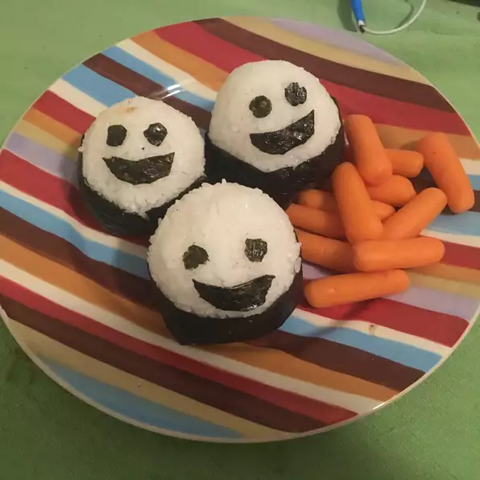

Onigiri (Japanese Rice Balls)

Description
Rice shaped in triangles or balls filled with your favorite ingredients. Common fillings are pickled plums or salmon but just about anything salty will work and plain is also very tasty. A yummy alternative to the American sandwich and a staple for any bento (Japanese boxed lunch). Store in the refrigerator.
See full recipe here: Allrecipes
Ingredients
- 2 Cups Water
- 1 Cup Jasmine Rice
- Salt
- 1 Sheet Nori (Dry Seaweed), cut into 1-inch strips
Directions
- Combine 2 cups water, rice, and a pinch of salt in a saucepan. Bring to a boil; reduce heat to medium-low and cover. Simmer, stirring occasionally to prevent rice from sticking, until rice is tender and liquid has been absorbed, 20 to 25 minutes. Fluff with a fork; cool rice until easily handled, about 10 minutes.
- Fill a small bowl with water. Place 2 tablespoons of salt in another small bowl.
- Dip hands in water and rub salt over hands. Take a handful of warm rice and form it into a ball; gently squish with your hands into an "L" or "C" shape, then apply gentle pressure to the sides to shape it into a triangle.
- Wrap a strip of nori around the triangle, using a bit of water to help it stick if necessary.
Nutrition Facts
Per Serving: 114 calories; protein 2.2g; carbohydrates 25.6g; sodium 28.4mg.